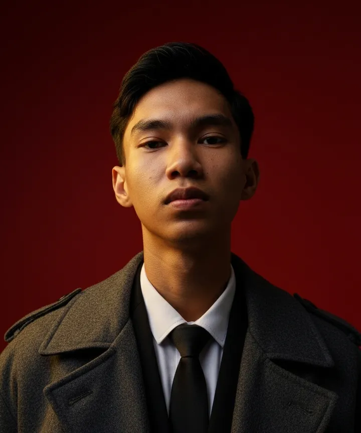

Sultan AmraS.IP.
Membuat ChartFlow, screener saham BEI, Wall Street, dan kripto yang aturannya terbuka dan diuji ke data 10 tahun.
Coba ChartFlowGratis, lihat fitur dan tampilannya dulu
- Minta kode aksesdikirim lewat WhatsApp atau Telegram
- Masuksudah punya kode
- Unduh aplikasi AndroidAPK, layar penuh
- Rekam jejakhasil dicatat, termasuk yang rugi
Ikuti saya
3 pasar, 7 metode, dan semua aturan diuji ke data 10 tahun. Yang tidak terbukti ditulis apa adanya.